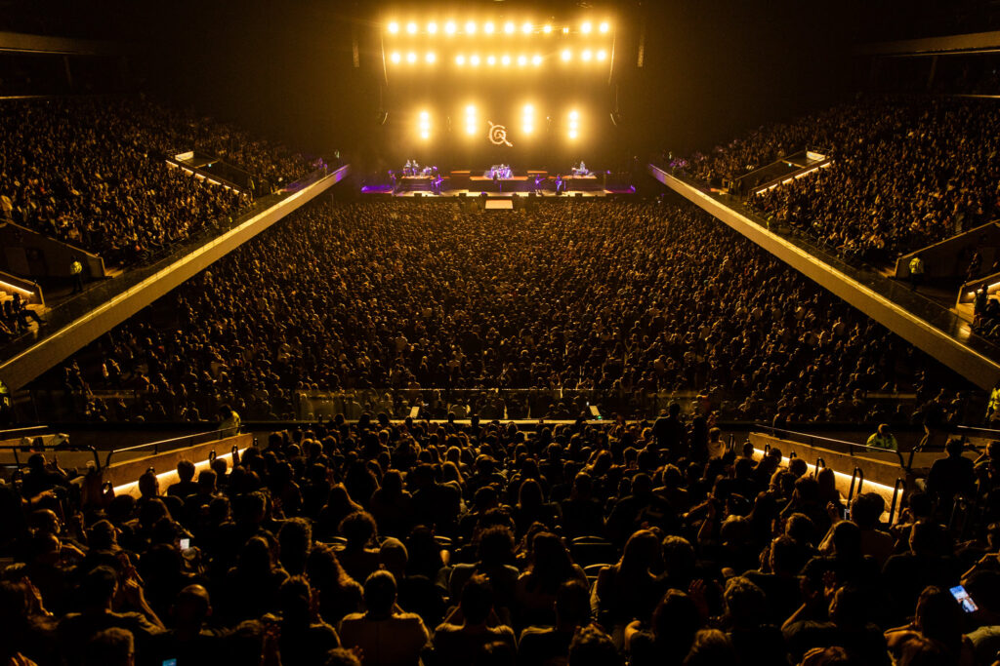

AV installations
Centro de interpretación y planetario Elsa Rosenvasser - Parque Patagonia
2023
 The present section reveals one of the most challenging Audio-Visual
installations that I have been part of. The place is called “CDI y planetario Elsa Rosenvasser,” and it is located in a wild area,
inside the Parque Patagonia in Santa Cruz, Argentina.
The remote location added to the fact that this was my first installation with audio, video, and control programming (all together), made this experience one of the most
difficult ones for me. For example, if you forgot one simple cable, tool, or accessory, that could complicate everything. This little add-on made it all a bit more
stressful (thankfully, that didn’t happen).
The present section reveals one of the most challenging Audio-Visual
installations that I have been part of. The place is called “CDI y planetario Elsa Rosenvasser,” and it is located in a wild area,
inside the Parque Patagonia in Santa Cruz, Argentina.
The remote location added to the fact that this was my first installation with audio, video, and control programming (all together), made this experience one of the most
difficult ones for me. For example, if you forgot one simple cable, tool, or accessory, that could complicate everything. This little add-on made it all a bit more
stressful (thankfully, that didn’t happen).

For each experience, we made possible the integration between the audio, video, and the scenography with a centralized control for everything. There are more than 10 diverse areas and the planetarium, which is the main star of the place with a capacity for 12 spectators.
The system was deployed using diverse top-tier brands like Biamp, Samsung, BrightSign, Christie, and NEC. With tools like Biamp Tesira software, Biamp Project Designer, Samsung Magic Info Server, Bright Author, and more. All the control of the museum is done via a physical keypad at the reception desk or with an iPad. The personnel could turn on and off all the experiences, manage volumes, and control the planetarium in an independent way.